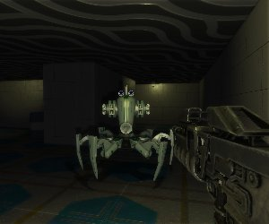

Battle against killer robots with your powerful fork gun in this open source 3d first-person shooter.
This game was made for GitHub's Game Off 2012 challenge. As existing engines were allowed, I took Dark Corners, completely replaced the medieval-themed assets with a sci-fi setting, implemented stuff needed for a shooter, such as sounds, weapons, "power-ups", smarter enemies etc. and came up with this new game, complete with a campaign.
There is also a level editor for creating and editing levels for the game. For maximum productivity and minimal learning curve, the editor is 2D, but you can test your creation very easily with a push of a button.
Levels can be exported and then shared with friends.
This game is open source under the very permissive MIT license, so you can freely study and modify it. Assets have different but still free licenses. Everything is available at GitHub.